Benchmarks¶
To assess the performance of our preliminary implementation of SMCP, we have conducted a series of numerical experiments.
SDP solvers¶
The following interior-point solvers were used in our experiments:
- Method M1 (SMCP 0.3a, feasible start solver with kktsolver=’chol’)
- Method M1c (SMCP 0.3a, feasible start solver with kktsolver=’chol’ and solvers.options[‘cholmod’]=True)
- Method M2 (SMCP 0.3a, feasible start solver with kktsolver=’qr’)
- CSDP 6.0.1
- DSDP 5.8
- SDPA 7.3.1
- SDPA-C 6.2.1 (binary dist.)
- SDPT3 4.0b (64-bit Matlab)
- SeDuMi 1.2 (64-bit Matlab)
Error measures¶
We report DIMACS error measures when available. The six error measures are defined as:
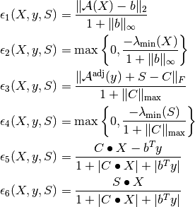
Here , and 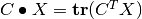.
Note that 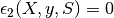 and 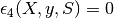 since all iterates 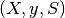 satisfy 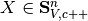 and 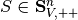.
Experimental setup¶
The following experiments were conducted on a desktop computer with an Intel Core 2 Quad Q6600 CPU (2.4 GHz), 4 GB of RAM, and running Ubuntu 9.10 (64 bit).
The problem instances used in the experiments are available for download here and the SDPLIB problems are available here.
We use the least-norm solution to the set of equations 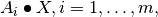 as starting point when it is strictly feasible, and otherwise we solve the phase I problem
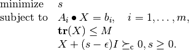
Here  is a small constant, and the constraint
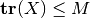 is added to bound the feasible set.
is a small constant, and the constraint
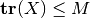 is added to bound the feasible set.
SDPs with band structure¶
We consider a family of SDP instances where the data matrices
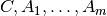 are of order  and banded with a
common bandwidth 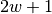.
and banded with a
common bandwidth 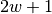.
Experiment 2¶
order 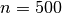, bandwidth 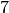 (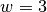), and variable number of constraints 
Results
| Show: |
The problem band_n500_m800_w3 required a phase I (M1 311.5 sec.; M2 47.8 sec.).
Experiment 3¶
order , constraints, and variable bandwidth
Results
| Show: |
Two problems required a phase I: band_n200_m100_w0 (M1 1.12 sec.; M2 0.53 sec.) and band_n200_m100_w1 (M1 3.18 sec.; M2 1.45 sec.).
Matrix norm minimization¶
We consider the matrix norm minimization problem
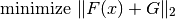
where 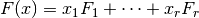 and 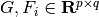 are the problem data. The problem can be formulated as an SDP:
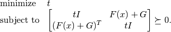
This SDP has dimensions 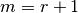 and 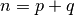. We generate as a dense 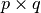 matrix, and the matrices 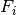 are generated such that the number of nonzero entries in each matrix is given by 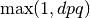 where the parameter 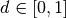 determines sparsity. The locations of nonzero entries in are random. Thus, the problem family is parameterized by the tuple 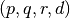.
Experiment 4¶
variable number of rows  , 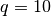 columns, 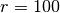 variables, and density 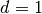
, 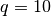 columns, 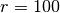 variables, and density 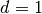
Results
| Show: |
 , and density
, and density Overlapping cliqes¶
We consider a family of SDPs which have an aggregate sparsity patterns  with
with  cliques of order
cliques of order  . The cliques are given by
. The cliques are given by
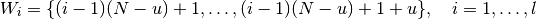
where  (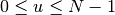) is the overlap between neighboring cliques. The sparsity pattern is illustrated below:
(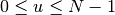) is the overlap between neighboring cliques. The sparsity pattern is illustrated below:
Note that corresponds to a block diagonal sparsity pattern and 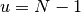 corresponds to a band pattern.
SDPLIB problems¶
The following experiment is based on problem instances from SDPLIB.
Experiment 9¶
SDPLIB problems with
Results
| Show: |
Three problems required a phase I: thetaG11 (M1 227.2 sec.; M1c 184.4 sec.), thetaG51 (M1 64.8 sec.: M1c 58.0 sec.), and truss8 (M1 17.9 sec.; M1c 17.9 sec.).
Nonchordal sparsity patterns¶
The following problems are based on sparsity patterns from the University of Florida Sparse Matrix Collection (UFSMC). We use as problem identifier the name rsX where X is the ID number of a sparsity pattern from UFSMC. Each problem instance has constraints and the number of nonzeros in the lower triangle of  is 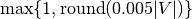 where 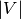 is the number of nonzeros in the lower triangle of the aggregate sparsity pattern , and
is 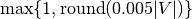 where 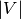 is the number of nonzeros in the lower triangle of the aggregate sparsity pattern , and  has nonzeros.
has nonzeros.